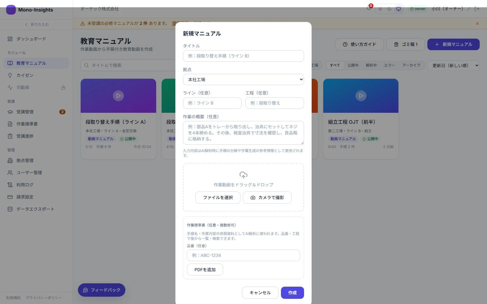
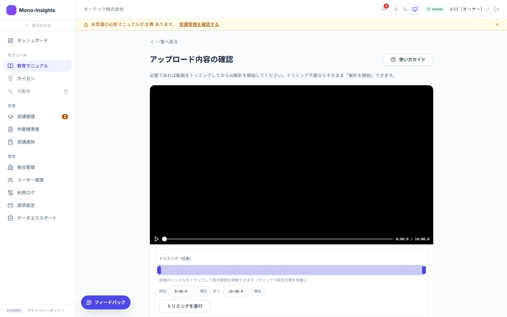
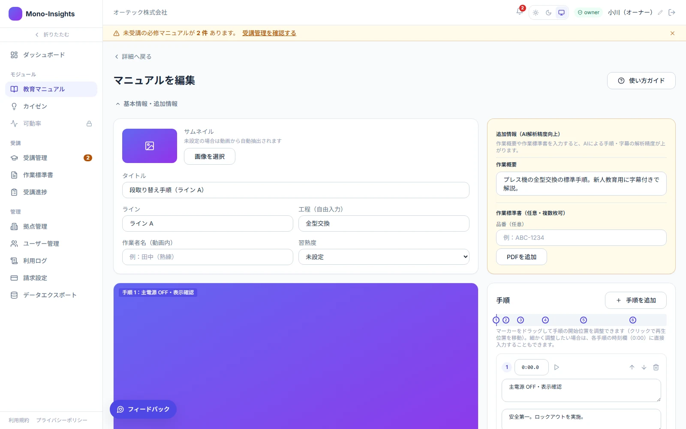
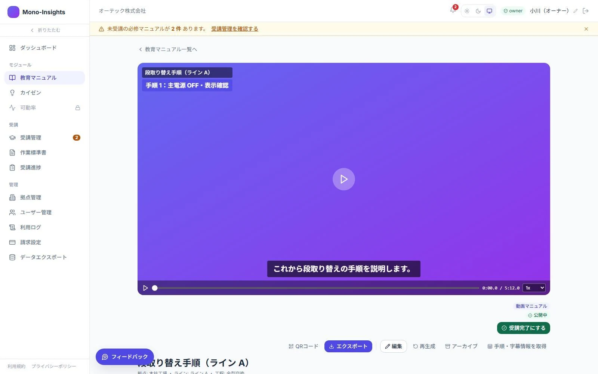

STEP 01
動画をアップ
現場の作業動画を登録。拠点・ライン・工程を指定します。
FEATURE 01 · 動画マニュアル
動画をアップロードしてAIに指示するだけで、
映像に合わせた作業手順を自動設定＆字幕付け。
伝えたい技術を、伝わる動画マニュアルに。

HOW TO CREATE

STEP 01
現場の作業動画を登録。拠点・ライン・工程を指定します。

STEP 02
作業概要や注意点を入力。AIが映像に合わせて手順と字幕を生成します。

STEP 03
生成した内容を確認し、タイトル・字幕・開始位置を調整します。

STEP 04
字幕・注釈を含む動画として書き出し、現場メンバーへ展開します。
WHAT YOU CAN DO
AIが生成した内容を手動で編集。警告マークを加え、安全上の注意も視覚的に伝えます。
字幕・注釈を動画に焼き込んで書き出し。必要な場面で活用できる教材にします。
作成したマニュアルをQRコードで配布。現場で必要な手順を確認できます。
対象ユーザーを指定して展開。誰が、いつ視聴・完了したかをモニタリングします。
BETTER INPUT, BETTER MANUALS
動画に「作業の概要」や「作業標準書」を加えるほど、AIが手がかりを得て、生成精度の向上につながります。
高精度のしくみ
生成後は内容を確認し、現場に合わせて調整できます。
EXPECTED BENEFITS
新人が、一人で何度でも復習できる。
熟練者の技術を、動画と手順で残せる。
教える負担を、チームで分け合える。
FEATURE COMPARISON
動画マニュアルとカイゼンは、セットでご利用いただけます。
| 主な用途・機能 | 動画マニュアル | カイゼン |
|---|---|---|
| AIによる生成 | 作業手順・字幕 | 標準作業組合せ表・標準作業表、改善案 |
| 確認・編集 | 手順・字幕の手動編集、警告マーク | 改善案の手動入力 |
| QRコードで配布 | 対応 | — |
| 視聴・完了状況の管理 | 対応 | — |
| 効果評価・ナレッジ蓄積 | — | 対応 |
| 情報の展開 | ユーザーを指定してマニュアルを展開 | 別拠点で改善ナレッジを参照 |
無料トライアルやデモのご依頼、導入のご相談を承ります。